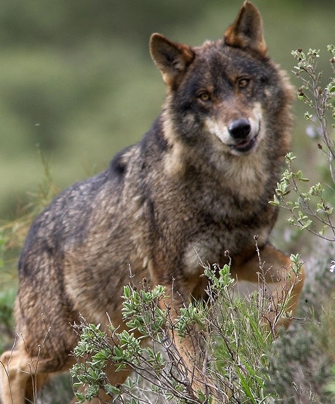
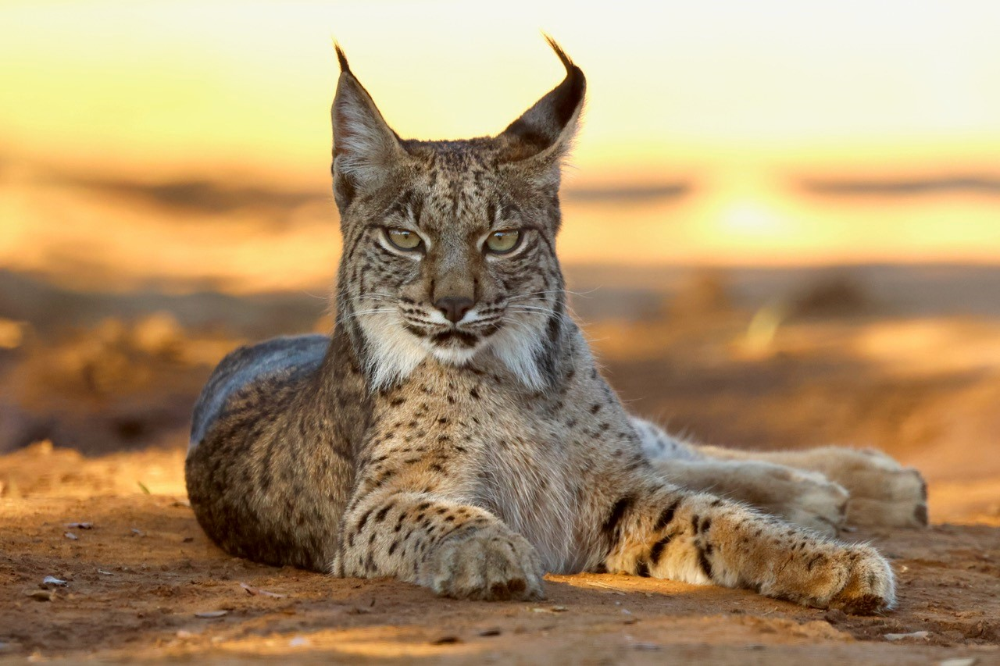
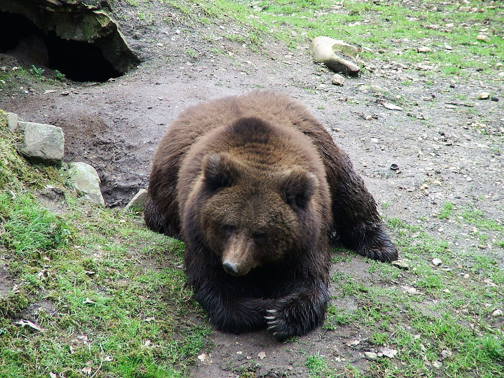
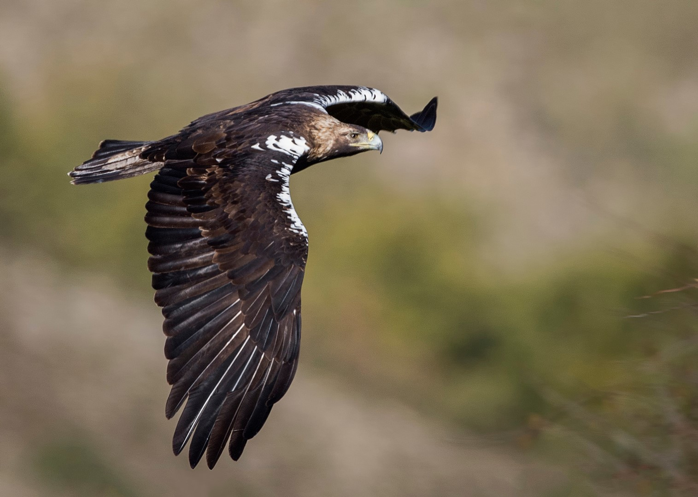
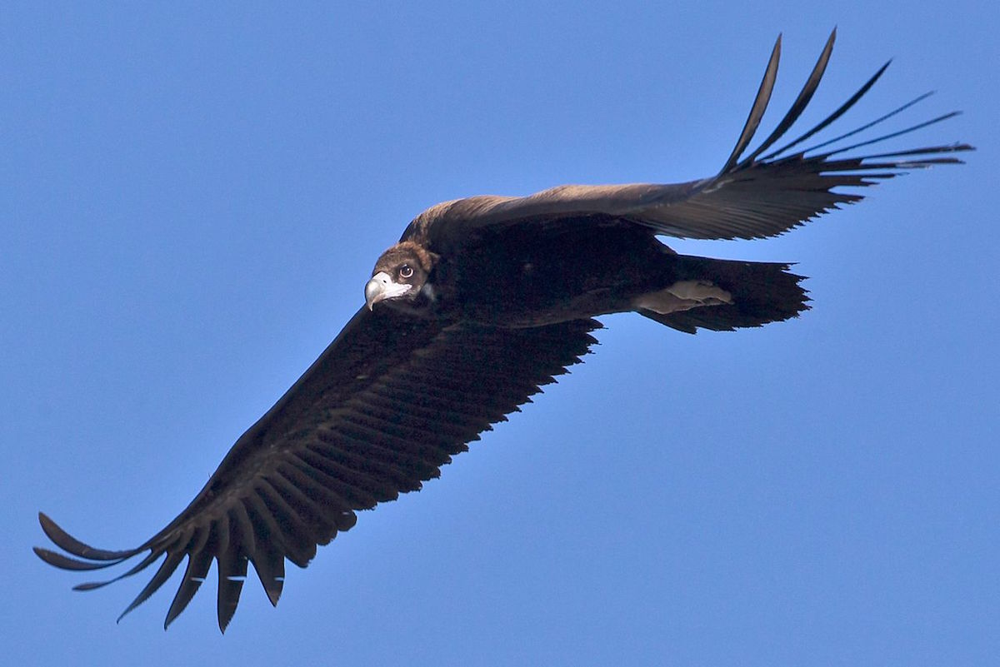
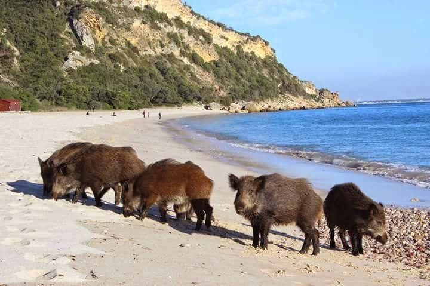
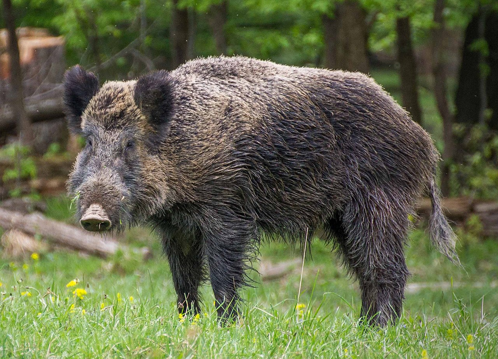

Uma paisagem que mudou
A fauna portuguesa conta uma história de mudanças profundas. Ao longo dos séculos, algumas espécies desapareceram ou ficaram muito reduzidas, enquanto outras se adaptaram a novas paisagens. Hoje, conservar a biodiversidade implica compreender o que aconteceu, quais foram as causas e que tentativas de restauro estão a ser feitas.
Vamos observar espécies emblemáticas, perceber o papel da caça, da perda de habitat e de outras pressões humanas, conhecer projetos de recuperação e analisar um problema muito atual: a expansão do javali e os conflitos que pode criar, incluindo a presença destes animais em zonas urbanas e costeiras.
Espécies que contam a história de Portugal
Leia o texto com atenção. Passe o rato pelas imagens para explorar diferentes espécies. Depois, escolha a continuação que faz sentido e justifique as suas respostas.







Durante séculos, a paisagem portuguesa foi diferente da que conhecemos hoje. O lobo-ibérico continuou presente em algumas regiões, mas perdeu território e foi perseguido. O lince-ibérico, associado sobretudo ao sul da Península, sofreu com a perda de habitat, a diminuição das presas e a fragmentação das populações.
Outras espécies desapareceram de Portugal em tempos históricos. O urso-pardo, por exemplo, deixou de fazer parte da fauna portuguesa. A transformação da paisagem, a caça e a redução de habitat contribuíram para estas perdas. Entretanto, algumas aves de rapina enfrentaram problemas semelhantes, mas beneficiaram de proteção, recuperação de habitat e programas de conservação.
O lince-ibérico tornou-se um caso particularmente interessante de restauro da natureza: a recuperação de populações exige habitat adequado, alimento suficiente, monitorização e colaboração entre instituições. O objetivo não é simplesmente “trazer um animal de volta”, mas reconstruir condições ecológicas para permitir a sua sobrevivência.
Hoje existe também um desafio diferente. O javali aumentou muito em várias zonas e pode aproximar-se de áreas urbanas, estradas, campos agrícolas e zonas costeiras. Em Setúbal e noutras cidades portuguesas, há episódios de javalis junto de espaços frequentados por pessoas. O problema envolve segurança, agricultura, gestão de resíduos, equilíbrio ecológico e a necessidade de encontrar formas responsáveis de gerir as populações.
Ouça o áudio uma vez e depois responda às perguntas.
O que aconteceu? O que era habitual?
Complete as frases com o verbo entre parênteses. Escolha entre pretérito perfeito e imperfeito e pense na diferença entre acontecimento concluído, hábito e contexto.
Palavras em destaque
Debate: conservar, restaurar e gerir
Imagine que participa numa reunião sobre conservação da natureza. Apresente uma posição fundamentada sobre uma espécie portuguesa, distinguindo recuperação de espécies e gestão de conflitos com animais.
Escolha pessoal
Pode começar assim: “Eu gostava de…”, “Quando via…”, “Eu pensava que…”, “Agora penso/sei que…”.
1. Diga qual o animal que escolheu.
2. Explique porque lhe parece bonito ou especial.
3. Conte uma pequena experiência: “Eu vi…”, “Eu fiz…”, “Eu pensei…”, “Eu gostava…”..
4. Diga se acha que a espécie está em perigo e/ou se é importante protegê-la.
Desafio de investigação
Escolha uma espécie. Construa uma pequena ficha com passado, problema, resposta de conservação e desafio atual.
Ficha de especialista
O que mudou? _______________________
Causas possíveis: ____________________
Medida de conservação: _______________
Risco ou conflito atual: _______________
A minha proposta: _____________________